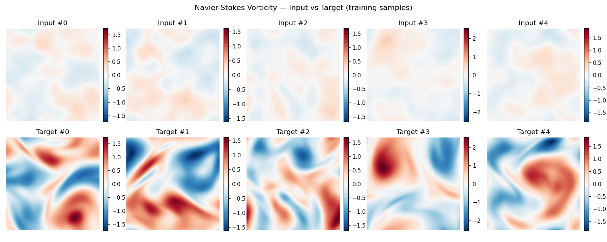
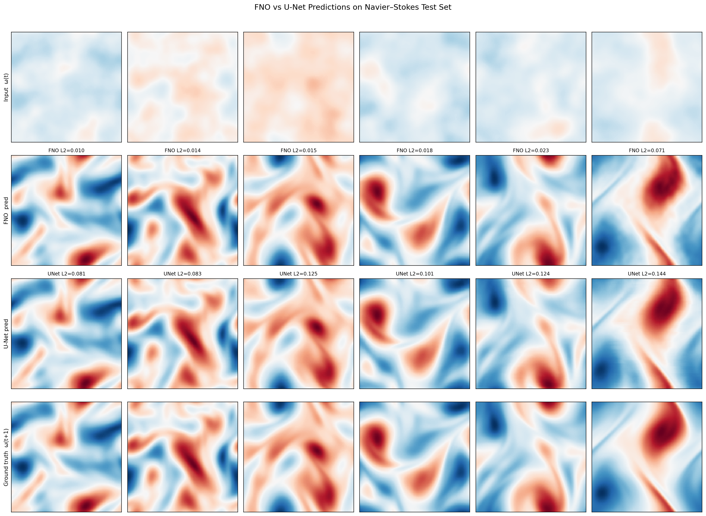
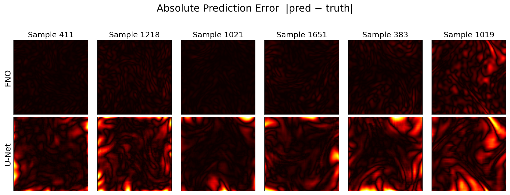
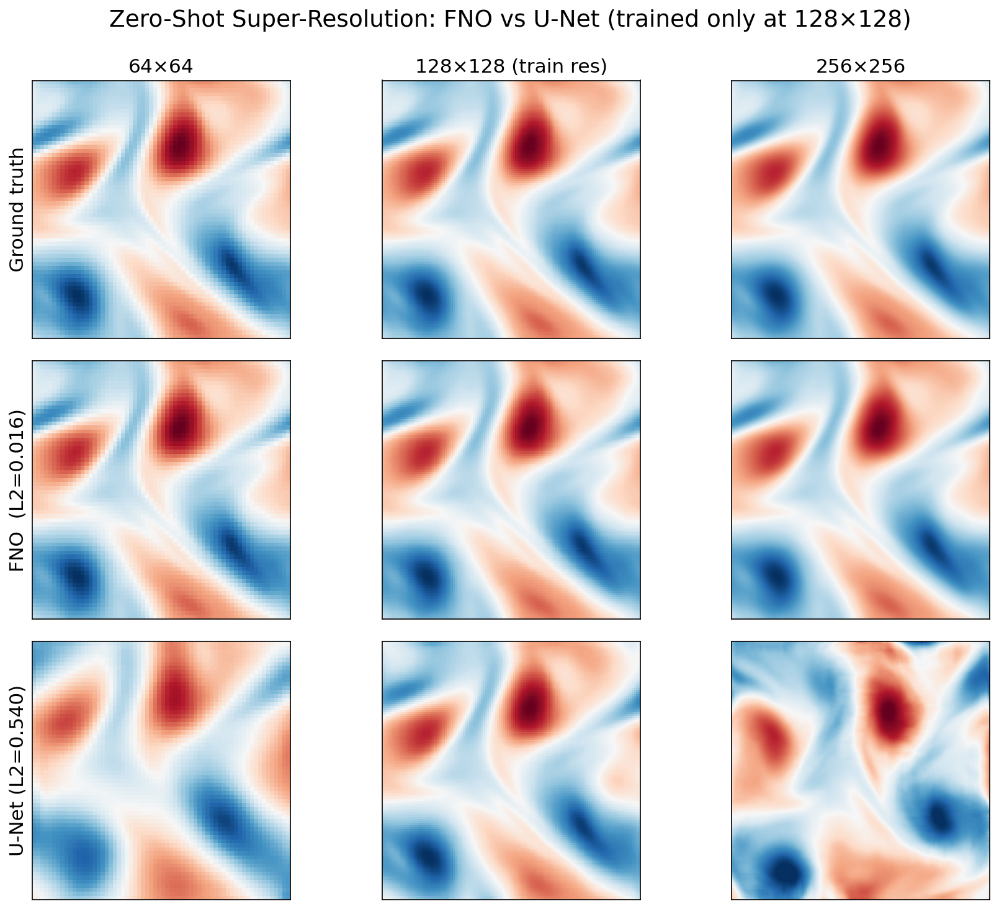

Fourier Neural Operators
for Fluid Dynamics
FNO vs U-Net on 2D Navier-Stokes
COMP 395 — Deep Learning | Final Project
Ian Havill · Hugh Baldwin · Aaron Chen
Occidental College
What We Did
We trained two AI models to watch swirling fluid and predict what it looks like one moment later.
FNO
Designed with fluid physics in mind.
Works in frequency space.
U-Net
General-purpose image model.
Used as our baseline comparison.
Punchline: FNO was 3× more accurate, 2× faster, and used 6× fewer parameters — and worked at resolutions it had never seen during training.
What We'll Cover
Background
- Fluid dynamics & why it's hard
- Vorticity fields
- Navier-Stokes equations
- Neural operators
- How FNO works (step by step)
- U-Net baseline
Our Work
- Dataset & training setup
- Accuracy & speed results
- Prediction visualisations
- Error maps
- Zero-shot super-resolution
- Why FNO wins
What Is Fluid Dynamics?
The study of how liquids and gases move.
🌊 Weather
Air flowing around pressure systems, forming storms and fronts
✈️ Aerodynamics
Air flowing over a wing to generate lift
🩸 Medicine
Blood flowing through arteries and around heart valves
In all these cases, we want to answer:
"Given the fluid's state right now, what does it look like a moment later?"
Problem: Solving the governing equations numerically can take minutes to hours on a supercomputer — and must be rerun from scratch for every new initial condition.
What We Track: Vorticity
Instead of tracking velocity directly, we use vorticity — a number at every point describing how much the fluid is spinning there.
🌀 Analogy: Picture a river. Where the water flows straight, vorticity ≈ 0. Where it curls into a whirlpool, vorticity is large.
Positive = clockwise spin | Negative = counter-clockwise spin
Input \(\omega(t)\)
Current vorticity field
128×128 grid of numbers
Think: one frame of the fluid movie
Target \(\omega(t+1)\)
Vorticity one timestep later
What the model must predict
Think: the next frame
The Navier-Stokes Equations
These PDEs govern all viscous fluid flow:
\[
\underbrace{\frac{\partial \mathbf{u}}{\partial t}}_{\text{change}} +
\underbrace{(\mathbf{u} \cdot \nabla)\mathbf{u}}_{\text{self-pushing}} =
\underbrace{-\nabla p}_{\text{pressure}} +
\underbrace{\nu \nabla^2 \mathbf{u}}_{\text{viscosity}} +
\underbrace{\mathbf{f}}_{\text{forcing}}
\]
Self-pushing term
\((\mathbf{u}\cdot\nabla)\mathbf{u}\) — the fluid's own motion shapes its future motion. This nonlinear term causes turbulence and chaos.
Viscosity \(\nu\)
How "thick" the fluid is.
Honey: high \(\nu\). Air: low \(\nu\).
Our dataset: \(\nu=10^{-4}\) → turbulent (Re = 10,000)
Forcing \(\mathbf{f}\)
Kolmogorov forcing: a sinusoidal push \(\sin(4\pi y)\) that pumps energy in continuously — like waving a giant paddle.
We work with vorticity \(\omega = \nabla\times\mathbf{u}\), which reduces this to a scalar field problem.
Our Approach: Learn It from Data
Instead of solving the equations every time, train a network to approximate the solution operator directly.
Standard neural network
Maps vectors → vectors
Fixed input size
Tied to the resolution it was trained at
Like a calculator that only works on numbers 0–100.
Neural operator
Maps functions → functions
Any input resolution
Learns the operator \(\mathcal{G}: \omega(t)\mapsto\omega(t+\Delta t)\)
Like a formula — works for any input, no matter how you measure it.
One training run. Then apply at any resolution — including ones never seen during training.
How FNO Works — Step by Step
Key insight: fluid dynamics is smooth at large scales — big swirling patterns (low frequencies) carry most of the physics.
1FFT — convert the 128×128 vorticity grid from pixel values into frequency components (how much of each swirling pattern is present)
2Truncate — keep only the 12 lowest frequencies. Throw away the high-frequency noise. Physics-motivated compression.
3Multiply by learned weights — each frequency mode × a trained complex number. This is where the model learns "how much to amplify each pattern."
4Inverse FFT — convert back to a vorticity grid at the original resolution.
5Add a local bypass — a 1×1 convolution in parallel handles fine-grained local effects.
Frequency components have the same physical meaning at any grid size → the learned weights stay valid at any resolution.
FNO Architecture
Input
128×128
+ grid coords
→
Lift
1→64 ch
1×1 conv
→
Fourier Block ×4
FFT → truncate →
weights → iFFT
+ bypass + GELU
→
Project
64→128→1
1×1 conv
→
Output
128×128
vorticity
Our config
- Modes: 12 × 12
- Width: 64 channels
- Layers: 4 Fourier blocks
- Parameters: ~4.7M
Why it's fast
Most computation happens on just 12 frequency modes — a tiny fraction of the full 128×128 grid. The FFT algorithm is also extremely efficient.
U-Net Baseline
Classic CNN encoder–decoder. We use it as our convolutional baseline.
🔭 Think of it as: zoom out (compress the image), do some processing, then zoom back in — pasting in details at each step via skip connections.
- Encoder: halve spatial size, double channels (×4)
- Decoder: upsample back, restoring spatial size
- Skip connections: paste encoder features into decoder to preserve fine detail
No physics-specific design — learns purely from data.
Our U-Net config
- 4 encoder/decoder levels
- Channels: 64→128→256→512
- BatchNorm + ReLU
- Parameters: ~31M
6.6× more parameters than FNO
Fixed 3×3 kernels → tied to the training resolution
Dataset
neuraloperator Zenodo dataset (doi:10.5281/zenodo.12825163) · ~1.5 GB
Each pair: input \(\omega(t)\) → target \(\omega(t+1)\)
Inputs: calm, std ≈ 0.15, range ≈ [−0.76, 0.82]
Targets: turbulent, std ≈ 0.71, range ≈ [−3.49, 3.93]
Targets are ~20× more variable than inputs — the model must actually learn the physics, not just copy the input.

Top: input | Bottom: target. Red = clockwise, blue = counter-clockwise.
Training Setup
Both models — same settings
- Loss: relative L² error
- Optimizer: Adam (lr = 10⁻³)
- LR schedule: cosine annealing → 10⁻⁵
- Epochs: 100
- Batch size: 20
- Hardware: NVIDIA RTX 2060 (6 GB)
Relative L² error
\[ \mathcal{L} = \frac{\|\hat{u} - u\|_2}{\|u\|_2} \]
1.0 = random guess | 0.1 = decent | 0.03 = great
📐 Learning rate: too large → overshoot. Too small → too slow. Cosine annealing = big strides first, tiny steps at the end — like crossing a room then threading a needle.
Results — Accuracy & Speed
| Model | Parameters | Test Rel-L² ↓ | Throughput ↑ | Latency ↓ |
| FNO |
4.7M |
0.0348 |
499 samp/s |
2.0 ms |
| U-Net |
31M |
0.1029 |
227 samp/s |
4.4 ms |
FNO error = 3.5% of target magnitude
U-Net = 10.3%
3× more accurate
FNO: 499 samples/sec
U-Net: 227 samples/sec
2.2× faster
FNO: 4.7M params
U-Net: 31M params
6.6× smaller
Looking at the Predictions
Six test samples spanning best → worst FNO error. Numbers = per-sample rel-L².

Row 1: Input | Row 2: FNO prediction | Row 3: U-Net prediction | Row 4: Ground truth
FNO predictions look almost identical to ground truth. U-Net captures the rough shape but blurs fine vortex structure and gets intensities slightly wrong.
Where the Errors Are
Absolute error |prediction − truth|. Bright = large error. Dark = small error.

Top row: FNO | Bottom row: U-Net
FNO: errors are small and diffuse everywhere.
U-Net: large errors concentrated at vortex edges — exactly where the physics changes most rapidly, and where it struggles most.
Consistency Across All 2,000 Test Samples
Each bar = how many test samples fell in that error range.
FNO (blue) — tight cluster near 0.035. Consistently good on almost every sample.
U-Net (red) — wide spread, many samples with much higher error. Not only less accurate on average, but unreliable.
Zero-Shot Super-Resolution
Both models trained only on 128×128. We then evaluated at 64×64 and 256×256 — no retraining. Zero examples at the new resolution.
| Resolution | FNO ↓ | U-Net ↓ |
|---|
| 64×64 | 0.019 | 0.476 |
| 128×128 train | 0.019 | 0.103 |
| 256×256 | 0.019 | 0.594 |
FNO: literally identical error at all 3 resolutions. The physics doesn't change — neither does the model.
U-Net at 256×256: error = 0.594. A random guess scores 1.0. U-Net is barely better than random at an unseen resolution.

Cols: 64 | 128 | 256 · Rows: truth / FNO / U-Net
Why Did FNO Win?
Inductive bias alignment
Fluid dynamics is global — a vortex on the left affects pressure everywhere, including the right.
FNO sees the entire domain at once via the FFT. U-Net's 3×3 kernels see a tiny local patch at a time.
🚁 FNO = helicopter view of the whole city.
🪟 U-Net = standing on the ground, looking through a small window.
Fluid dynamics needs the helicopter.
Resolution independence
FNO learns weights for frequency modes. A frequency like "swirl repeating 4× across the domain" means the same thing at 64×64 or 256×256.
U-Net's 3×3 kernel covers 3 pixels × grid-spacing. Double the resolution → the same kernel now covers half the physical area. Every filter has a different meaning. That's why it breaks.
Parameter efficiency
FNO spends its 4.7M params on the most important frequencies. U-Net spreads 31M params across every local pixel relationship — most of them redundant for physics.
Conclusion
What we showed
- Neural networks can learn to predict fluid dynamics from data
- FNO: 3× more accurate, 6.6× smaller, 2.2× faster than U-Net
- FNO error flat across all resolutions; U-Net collapses at unseen sizes
- Architecture that matches the problem beats a bigger generic one
Limitations
- Single fixed viscosity — no generalisation across ν
- Single-step only — errors accumulate over rollout
- Super-res ground truth is approximate (bilinear upsample)
Broader lesson
Inductive bias — baking the right physics assumptions into the architecture — can outperform raw model capacity. Especially powerful when the underlying rules are known.